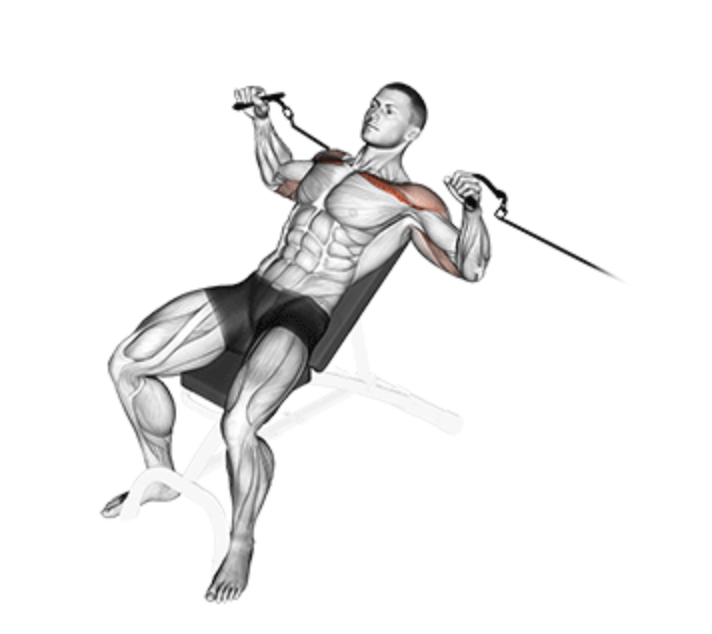
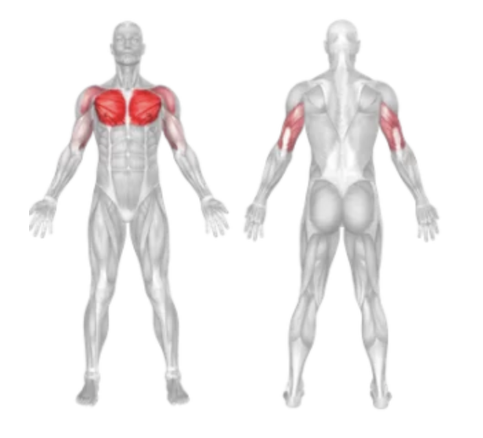
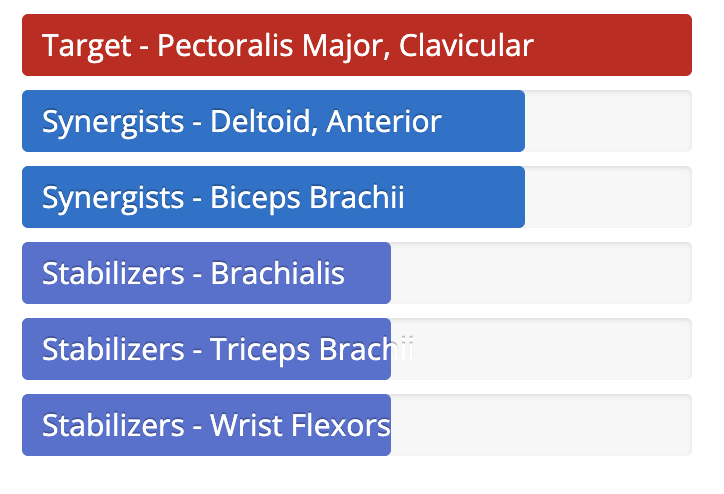

Incline Cable Fly
Setup
Adjust the pulleys on a cable machine to a low position, just above ankle level.
Attach single handle grips to both pulleys and grab one in each hand.
Stand in the center of the machine and take a step forward into a staggered stance for balance.
Bring your hands slightly in front of your body with a slight bend in your elbows, mimicking a wide arc.
Keep your chest up, back straight, and core engaged throughout the movement.

Execution
Fly Motion:
Exhale as you bring your hands upward and inward in a wide arc, squeezing your chest at the top.
Controlled Return:
Inhale and slowly return to the starting position, maintaining tension in the cables.
Repeat the movement with controlled form for the desired number of repetitions.
Tips for Effectiveness
Avoid Overstretching:
Don’t allow your arms to stretch too far back to prevent shoulder strain.
Keep Elbows Bent:
Maintain a slight bend in the elbows throughout to reduce joint stress.
Mind-Muscle Connection:
Focus on squeezing your upper chest at the peak of each rep.
Benefits of Incline Cable Fly
Upper Chest Activation:
Specifically targets the upper pectoral muscles for balanced development.
Constant Tension:
Cables provide continuous resistance throughout the movement.
Improved Isolation:
Helps isolate the chest muscles without heavy shoulder involvement.
Muscles Worked in Incline Cable Fly


Do you want to change the language of this page?
English
Malayalam
Tamil
Hindi